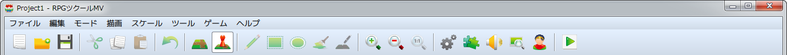

メニューバーの内容

メインウィンドウのメニューバーに収められた項目の内容は以下のとおりです。
［ファイル］メニュー
- プロジェクトの新規作成
- 新しいプロジェクトを作成します。すでにプロジェクトを開いている場合、新規作成後にそのプロジェクトは閉じられます。
- プロジェクトを開く
- 保存されているプロジェクトを開き、ゲームの内容を編集できる状態にします。［開く］ウィンドウで、プロジェクトのフォルダ内の［Game］（または［Game.rpgproject］）のファイルを指定します。
- プロジェクトを閉じる
- プロジェクトを閉じます。保存されていないデータがあると、確認のウィンドウが表示されます。保存してから閉じる場合は［はい］、保存しないで閉じる場合は［いいえ］を選択します。
- プロジェクトの保存
- 編集中のプロジェクトの内容を上書き保存します。
- デプロイメント
- 選択したプラットフォームの形式に合わせてプロジェクトの書き出しを行います。詳しくは［出力フォーマット］の項目をご覧ください。
- RPGツクールMVの終了
- 本ソフトを終了します。［プロジェクトを閉じる］と同様に、プロジェクトに保存していないデータが存在する場合は確認ウィンドウが表示されます。
［編集］メニュー
- 元に戻す
- 直前に行なった編集を取り消し、ひとつ前の状態に戻せます。最大で20手順前の状態にさかのぼれます。
- 切り取り
- 選択しているマップデータやマップイベントを、クリップボードに取り込んだうえで削除します。
- コピー
- 選択しているマップデータやマップイベントを、クリップボードに取り込みます。
- 貼り付け
- クリップボードに取り込んだ内容を、新しいマップデータやマップイベントとして追加します。
- 削除
- 選択しているマップデータやマップイベントを削除します。
［モード］メニュー
- マップ
- マップのデザインを編集するモードに切り替えます。
- イベント
-
マップイベントを作成・編集するモードに切り替えます。マップビューにはタイルの大きさで区切られた罫線が表示されます。
※敵グループの出現地域（エンカウントする地域）を定義する［リージョン］の編集モードはタイルパレットのタブ［R］を選択します。
［描画］メニュー
マップの編集モードでタイルの描画に使うツールを収めます。詳細は［マップデザインの編集］の項目を参照してください。
［スケール］メニュー
- 拡大
- 選択するたびにマップビューが拡大していきます。
- 縮小
- 選択するたびにマップビューが縮小していきます。
- 原寸
- 標準（等倍表示）で表示します。
［ツール］メニュー
- データベース
- キャラクターやアイテムなどの要素を作成／編集する［データベース］の設定ウィンドウを開きます。
- プラグイン管理
- プラグイン管理を行います。詳しくは［補助ツールの使い方］の項目をご覧ください。
- サウンドテスト
- プロジェクトに素材ファイルとして読み込まれている音声を試聴できます。詳しくは［補助ツールの使い方］の項目をご覧ください。
- イベント検索
- さまざまな条件でイベントを検索することができます。詳しくは［補助ツールの使い方］の項目をご覧ください。
- キャラクター生成
- あらかじめ用意されたパーツを組み合わせて、顔グラフィックや歩行キャラ、戦闘キャラなどを作成できます。詳しくは［補助ツールの使い方］の項目をご覧ください。
［ゲーム］メニュー
- テストプレイ
- テストプレイを開始します。詳しくは［補助ツールの使い方］の項目をご覧ください。
- フォルダを開く
- プロジェクトの保存フォルダを開きます。プロジェクトフォルダの場所を確認したりフォルダ内のファイルを手作業で操作したりするときに使います。
［ヘルプ］メニュー
- 目次
- ヘルプ（このウィンドウ）を表示します。
- バージョン
- 本ソフトのバージョン情報を表示します。